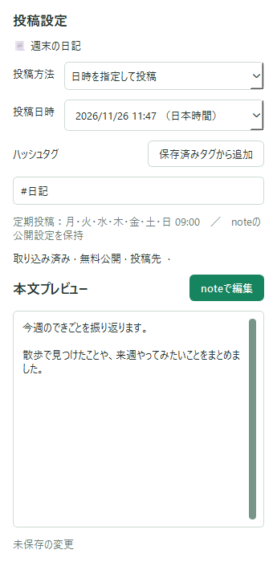

詳細説明書の目次
本文編集・公開条件・投稿・削除
noteの編集画面、有料・限定公開、今すぐ投稿、更新、結果確認
本文・装飾・画像はnoteの編集機能で変更する
対象記事の「noteで編集」を開きます。太字・見出し・リスト・引用・コード・目次・本文内画像・音声・埋め込み・添付ファイル・有料エリアなどは、note本来の編集機能を使います。


PCの本文プレビューは、noteのすべての編集機能を置き換えるエディターではありません。note側で素材や有料エリアを編集した後は、本文だけでなく公開条件も確認します。
PCから開いた取り込み用の編集画面
- PCで記事を選び「noteで編集」を押します。
- タイトルに「ストック編集・公開しません」とある専用画面で編集します。
- 画面の案内に沿って最後の投稿操作まで進め、本文・素材・公開条件をアプリへ取り込みます。
- アプリに戻ったら、本文・価格などの条件と処理結果を確認します。
この取り込み用画面の最後の操作は、アプリに条件を保存するためのものです。実際の公開はアプリの「今すぐ投稿」または予約処理で行います。
取り込み前にアプリが終了した場合は、noteの下書きから編集を再開して取り込み直してください。「noteで編集中」のまま無理に予約・削除を繰り返さないでください。
スマホや通常のブラウザーから編集する場合
Discordの「noteで編集」から通常のnote編集画面を開いた場合は、noteの投稿操作が実際の公開になります。下書きとして残す場合はnoteの下書き保存を使ってください。
- noteで編集し、下書き保存します。
- Discordへ戻り「内容・公開条件を読み直す」を押します。
- 新しい本文と公開条件を確認し、予約または即時投稿へ進みます。
価格・有料部分・限定公開などの確認
投稿には取り込んだ公開条件を使います。価格、有料部分の位置、公開範囲、通知などをnote側で決めてから取り込んでください。noteで設定を変えたのに、アプリの古い条件を確認せず投稿しないようにします。
「未取得」「未取り込み」の表示があるときは、記事を開いて本文・公開条件を取得します。タイトルが空欄の場合もnoteが公開を受け付けないため、先にタイトルを保存します。
note自体の予約や非公開条件で反映された記事は、「noteで予約済み」「noteへ反映済み（非公開）」となる場合があります。PCの日時指定予約とnote自体の予約は二重に作らず、note側で予約された内容はnoteの編集画面で確認します。
今すぐ投稿する・公開済み記事を更新する
- 対象記事を開き、本文と公開条件を確認します。
- PCは「今すぐ投稿」、Discordは「今すぐ投稿・更新」を押します。
- 記事名・投稿先・価格・公開条件を確認して実行します。Discordでは新規公開と更新で確認ボタンの文言が変わります。
- 受付の表示だけで終わりにせず、処理結果と公開URLを確認します。
公開済み記事の更新は同じ記事へ反映する操作です。公開結果が分からないときは再実行せず、次の「公開結果の確認」を使ってください。
予約後にnote側を編集した場合
保存時と異なる本文・公開条件を確認した場合は「変更あり・要確認」などの状態になり、そのまま古い内容では送信しません。最新の内容を読み直してから、記事の予定と条件を確認します。
PCで同じ記事に未保存の変更がある間は、別の画面からの操作が保留・拒否される場合があります。先にPCの変更を保存するか、不要な変更なら破棄してください。DiscordとPCで同じ記事を同時編集するときも、古い画面からの上書きは受け付けない場合があります。
公開結果が不明な場合
- 対象記事の「理由」と「履歴」を読みます。
- noteの「自分の記事」または公開URLで、すでに公開・更新されていないか確認します。
- PCの「公開結果を確認」を使います。
- 未公開を確認できた後に、表示された状態に沿って予約や投稿をやり直します。
投稿途中でアプリが終了すると「結果未確認」になる場合があります。アプリはこの状態を自動で再送しません。「下書きに戻す」はアプリ内の状態を戻す操作で、noteの記事を非公開にする機能ではありません。
記事削除と予約取消を取り違えない
| 目的 | 操作 | noteの記事 |
|---|---|---|
| 投稿予定だけを解除 | Discord：予約取消／PC：対象記事にチェックしてキュー解除（件数） | 残ります |
| noteの記事を削除 | PCの削除／Discordのnoteから削除 | note側から削除します |
| note未保存の原稿だけを削除 | PCの削除で確認 | まだnote記事がないためPC内の原稿が対象です |
削除の確認画面ではタイトルを見て実行します。応答が途切れた場合は、note側の一覧を確認してから再操作します。PC内のバックアップに原稿があっても、削除したnote記事のURLや公開状態まで元に戻せるとは限りません。